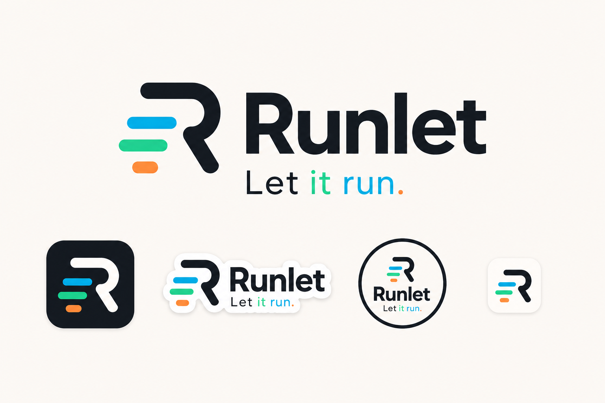
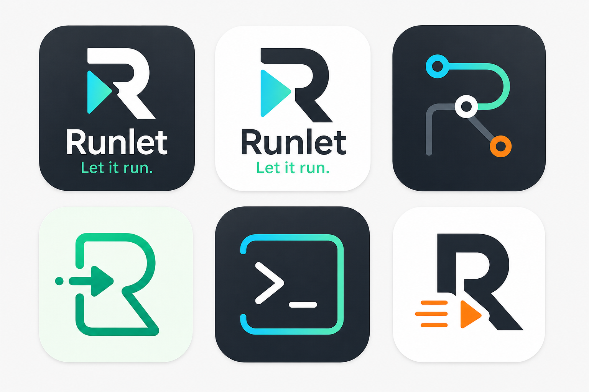
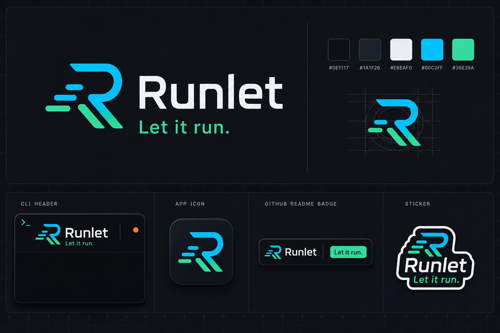
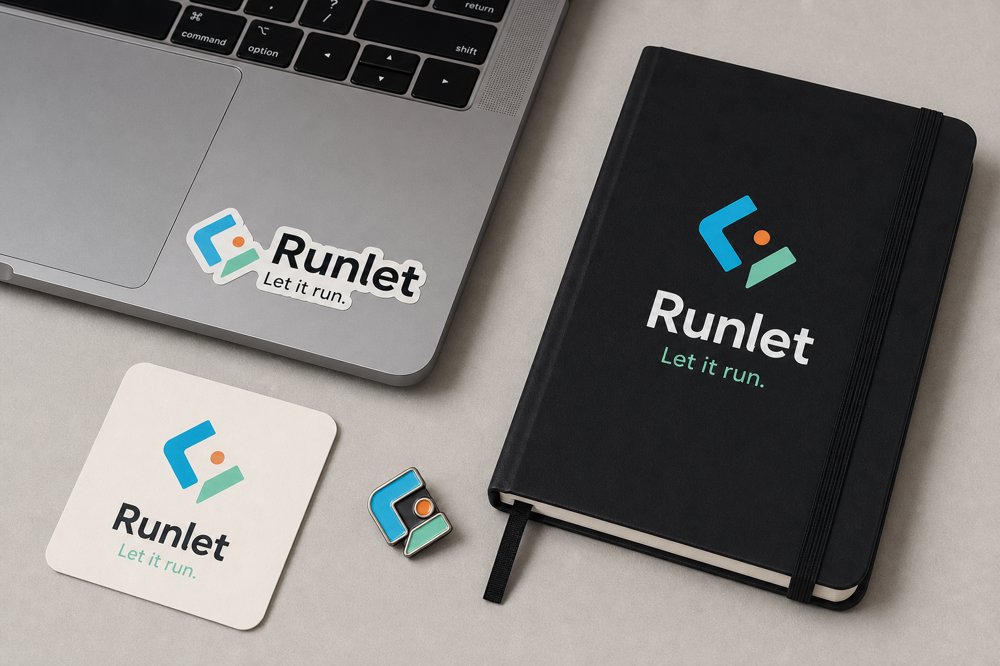

Runlet Brand Materials
Slogan: Let it run.

01 Brand Board Primary logo, icon, sticker, and badge direction.

02 Dark Kit Developer-tool system feel with CLI and README applications.

03 Merch Sticker, pin, notebook, and launch-material treatment.

04 App Icons Six icon directions for favicon and app identity refinement.